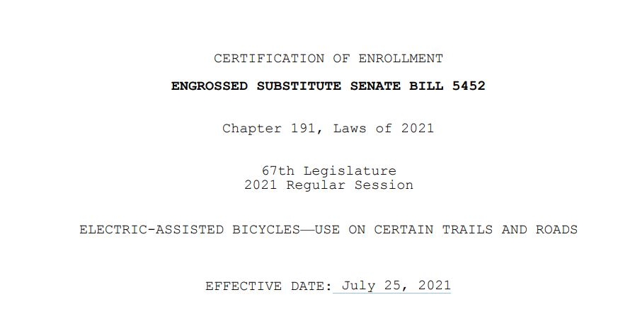
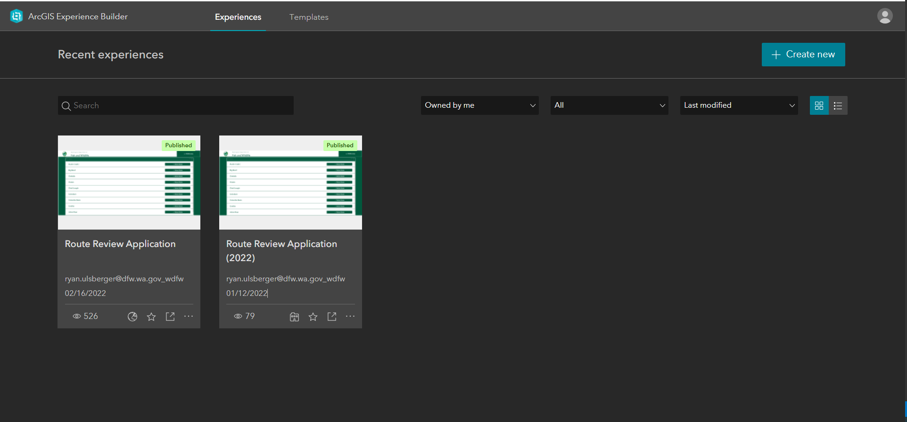
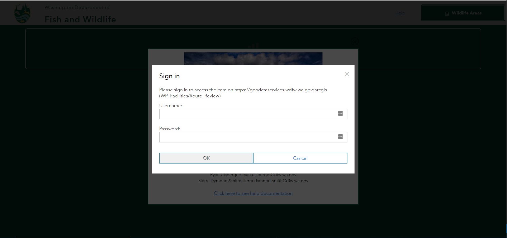

What an Experience...
Using the ArcGIS Experience Builder to Build Custom Applications.
What's the problem
Executive Manadate to map all the routes in Washington

Ground Truthing all the data we created.
- Wildlife Area Managers
How it was done in the past.

What were our requirements.
- Edit Geometries
- Add Attributes
- Add New Features
- Really Simple and Easy to Use
- No custom application development
Experience Builder
- A No-Code Web Page and Application Builder.
- Directly integreates into the ArcGIS Online Ecosystem.
What's different
- Uses the latest ArcGIS JS API 4.0
- Mobile Responsive Development
- Uses modern web framework technologies
- Allows for development of non-map centric and multi-page application development.
So it's like Web App Builder...
- Uses the latest ArcGIS JS API 4.0
- Mobile Responsive Development
- Uses modern web framework technologies
- Allows for development of non-map centric and multi-page application development.
Why did we choose Experience Builder
- Simple Integration with ArcGIS Online
- Can be shared publically with
- Uses modern web framework technologies
- Allows for development of non-map centric and multi-page application development.
Building An Application
Using the Application
Key Takeaways
- Building simple web pages is quick and fun.
- Feature Development is still in progress, some items may not be fully functional
- Custom Styling can get difficult real quick.
- Component state management is still lacking and is fully featured for modern app development.